<!-- .slide: data-state="front hide-controls" --> <div id="title">The Onion Routing (TOR)</div> <div id="subtitle">Data Privacy and Security</div> <div id="date">Data Science and Management (DASMA)</div> --- <!-- .slide: data-state="break-blue hide-controls" --> # Motivation --- ## Why Do We Need Anonymous Communication? <div class="content-center"> <div class="columns-container columns-top"> <div class="col"> When browsing the Internet, your traffic passes through several intermediaries (ISPs, routers, etc.) that can observe: <br/> - **Who you are**: your IP address reveals your identity and location - **Where you go**: the destination website or service - **What you do**: the content of unencrypted communications <br/> <br/> </div> <div class="col"> <div class="cell-center"> </div> </div> </div> <div class="fragment" data-fragment-index="0"> <div class="alert alert-error"><b>PROBLEM:</b> Even with <b>HTTPS</b>, the destination (which website you visit) is still visible to your ISP!</div> <br/> </div> <div class="fragment" data-fragment-index="1"> <div class="cell-center"> ***How can we achieve anonymous communication on the Internet?*** </div> </div> </div> --- ## Regular Internet Browsing <div class="content-center"> <div class="cell-center"> <p>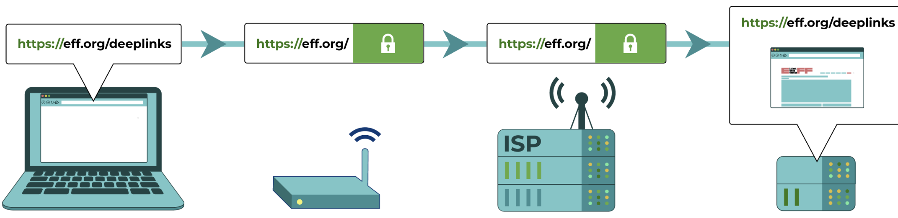</p> </div> <br/> <br/> Your ISP can see: - Your IP address (who you are) - The destination website (where you go) - It can **block** or **censor** websites at will </div> --- ## VPN: A First Attempt at Privacy <div class="content-center"> <div class="cell-center"> <p>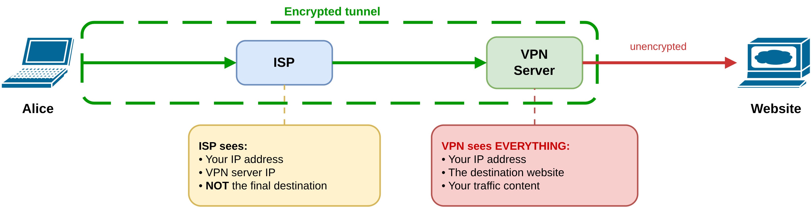</p> </div> <br/> <div class="fragment" data-fragment-index="0"> A **VPN** (Virtual Private Network) creates an encrypted tunnel to a VPN server: - The ISP sees you connecting to the VPN server, but **not** the final destination - However, the **VPN provider sees everything**: your IP, the destination, and your traffic <br/> </div> <div class="fragment" data-fragment-index="1"> <div class="alert alert-error"><b>PROBLEM</b>: You are just transferring trust from your ISP to the VPN provider!</div> </div> </div> --- ## VPN Limitations <div class="content-center"> VPN providers are often **private companies** that: <br/> - May collect personal data (credit card info, IP addresses, browsing activity) - May sell this data to third parties - Are subject to government search warrants and legal orders - Operate a **centralized** infrastructure (single point of failure and trust) <br/> <div class="fragment" data-fragment-index="0"> <div class="alert alert-warning"><b>WARNING</b>: VPNs provide <b>privacy by trust</b> — you must trust the VPN operator not to spy on you.</div> <br/> </div> <div class="fragment" data-fragment-index="1"> <div class="cell-center"> ***Can we do better? Can we achieve privacy by design?*** </div> </div> </div> --- ## Origins of Tor <div class="content-center"> - **1995**: The concept of *onion routing* was invented by Paul Syverson, David Goldschlag, and Michael Reed at the **US Naval Research Laboratory (NRL)**. <br/> <div class="fragment" data-fragment-index="0"> - **Early 2000s**: Roger Dingledine (MIT graduate) and Nick Mathewson began working on an onion routing implementation with Paul Syverson at NRL. <br/> </div> <div class="fragment" data-fragment-index="1"> - **2002**: The first version of **Tor** (The Onion Routing) software was deployed on September 20, 2002, as **free and open-source** software. <br/> </div> <div class="fragment" data-fragment-index="2"> - **2006**: Roger and Nick founded **The Tor Project, Inc.**, a 501(c)(3) non-profit organization to maintain and develop the Tor software and network. <br/> </div> <div class="fragment" data-fragment-index="3"> <div class="alert alert-note"><b>NOTE:</b> The NRL made Tor open source to encourage civilian adoption. An anonymity network used only by the military provides no anonymity — every connection would be identifiable as military. Widespread public use lets government traffic blend in undetected.</div> </div> </div> --- ## What is Tor? <div class="content-center"> **Tor** (The Onion Routing) is a free and open-source software for enabling **anonymous communication** over the Internet. <div class="columns-container columns-center"> <div class="col"> <div class="cell-center"> <img src="img/tor-how-it-works-illustration.png" style="width: 620px;"> </div> <br/> </div> <div class="col"> <div class="fragment" data-fragment-index="0"> Key properties: - Routes traffic through a network of **volunteer-run servers** (relays) - Traffic is encrypted in **multiple layers** (like an onion) - **Decentralized**: no single entity can see both the source and destination - **Open source**: anyone can audit the code and verify its security </div> </div> </div> <div class="fragment" data-fragment-index="1"> <div class="cell-center"> Tor provides **privacy by design** — the system is built so that no single party can deanonymize users. </div> <br/> </div> <div class="fragment" data-fragment-index="2"> <div class="cell-center"> As of 2024: **7,880+ relays** and **1,820+ bridges** operated by volunteers worldwide. </div> </div> </div> --- <!-- .slide: data-state="break-blue hide-controls" --> # How Tor Works: Basic Concepts --- ## Tor vs VPN: Key Difference <div class="content-center"> <div class="cell-center"> <p>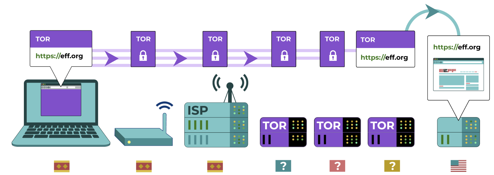</p> </div> <br/> | | VPN | Tor | |---|---|---| | **Hops** | 1 server | 3 relays (guard, middle, exit) | | **Encryption** | 1 layer | 3 layers (onion encryption) | | **Operator** | Private company | Volunteers (decentralized) | | **Trust model** | Trust VPN provider | No single point of trust | | **Knows your IP** | VPN provider | Only guard relay | | **Knows destination** | VPN provider | Only exit relay | | **Open source** | Often no | Always yes | </div> --- ## The Tor Circuit <div class="content-center"> <div class="cell-center"> <p>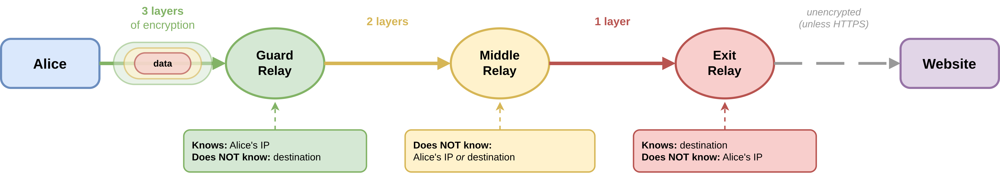</p> </div> <br/> <br/> <div class="fragment" data-fragment-index="0"> A **Tor circuit** consists of three relays: 1. **Guard (entry) relay**: knows Alice's IP, but not the destination 2. **Middle relay**: knows neither Alice's IP nor the destination 3. **Exit relay**: knows the destination, but not Alice's IP </div> </div> --- ## Example of TOR circuit <div class="content-center"> <p>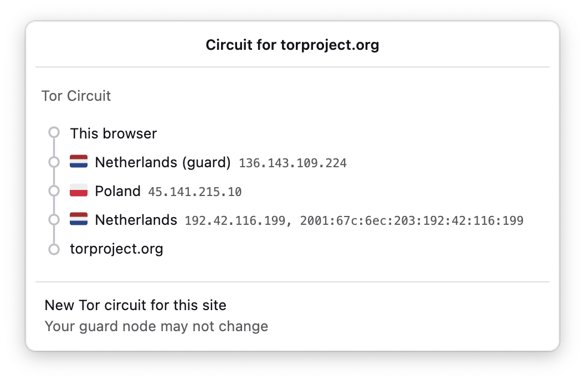</p> </div> --- ## Why Exactly Three Relays? <div class="content-center"> <div class="cell-center"> <p>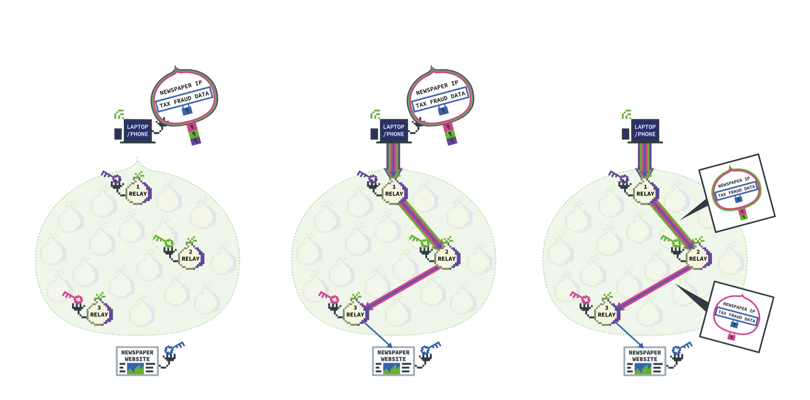</p> </div> </div> --- <div class="content-center"> <div class="columns-container columns-top"> <div class="col"> <div class="fragment" data-fragment-index="1"> **Why not fewer (e.g., 2)?** <br/> - With only two relays, a single relay would know both Alice's IP and the destination - An adversary controlling that relay could easily correlate users with their activities - The middle relay acts as a critical **buffer** that separates knowledge of source and destination </div> </div> <div class="col"> <div class="fragment" data-fragment-index="2"> **Why not more (e.g., 5)?** <br/> - Additional relays increase latency and reduce connection speeds - No meaningful improvement in security or anonymity (as far as we know) - Slower network discourages adoption, which weakens anonymity for everyone </div> </div> </div> </div> --- ## Onion Encryption <div class="content-center"> Alice encrypts the data in **three layers** (one for each relay): $E_{K_{guard}}(E_{K_{middle}}(E_{K_{exit}}(\\text{data})))$ <br/> <div class="cell-center"> <p>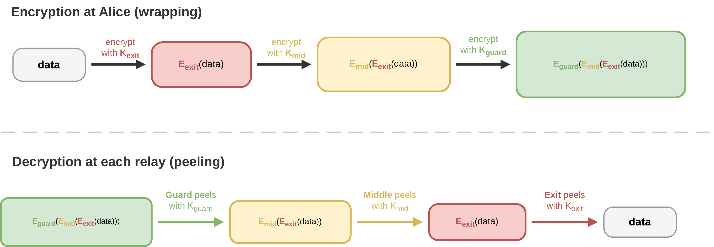</p> </div> <br/> Each relay **peels off one layer** (decrypts with its key) and forwards the result to the next relay. This is called **onion routing** because the encryption layers are peeled like an onion. </div> --- ## Tor Relays <div class="content-center"> Tor relays are **volunteer-run servers** distributed around the world: <br/> - **Guard (entry) relays**: the first hop; they see the user's IP address but not the destination - **Middle relays**: relay traffic between the guard and exit; they see neither source nor destination - **Exit relays**: the last hop; they see the destination but not the user's IP <br/> <div class="fragment" data-fragment-index="0"> All relays are **publicly listed** on the Tor Metrics portal (<a href="https://metrics.torproject.org/rs.html">metrics.torproject.org</a>). This is by design: transparency increases trust in the network. <br/> </div> </div> --- <div class="content-center"> <div class="cell-center"> <p>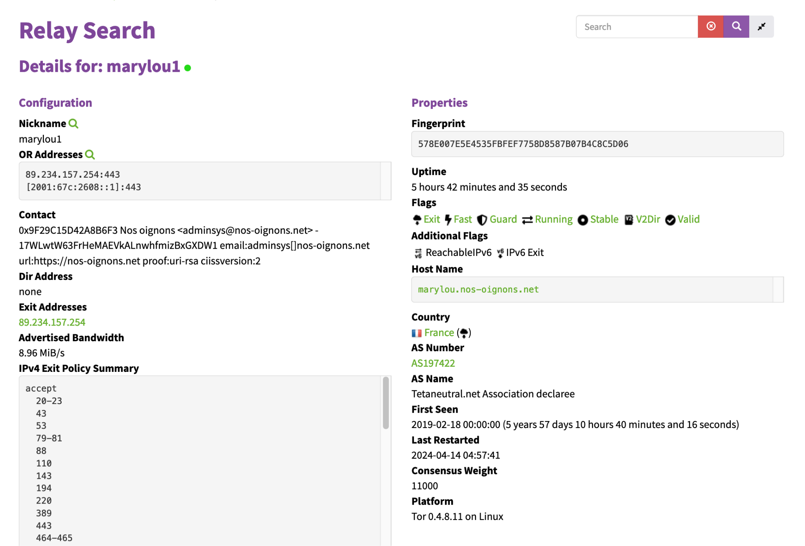</p> </div> </div> --- <div class="content-center"> Anyone<sup>*</sup> can run a Tor relay: <a href="https://community.torproject.org/relay/">community.torproject.org/relay</a> <div class="cell-center"> <p>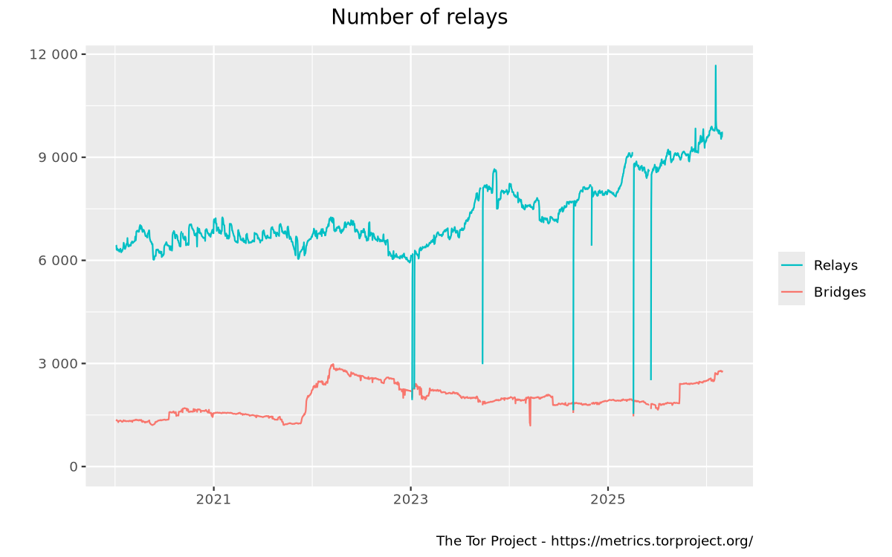</p> </div> </div> <div class="footnotes"> <sup>*</sup> Check the Terms of Service (TOS) of your ISP/cloud: they may prohibit or restrict the use of Tor. </div> --- ## Bridges: Circumventing Censorship <div class="content-center"> Since all relay IP addresses are public, an ISP or government can **block** connections to them. <div class="cell-center"> <p>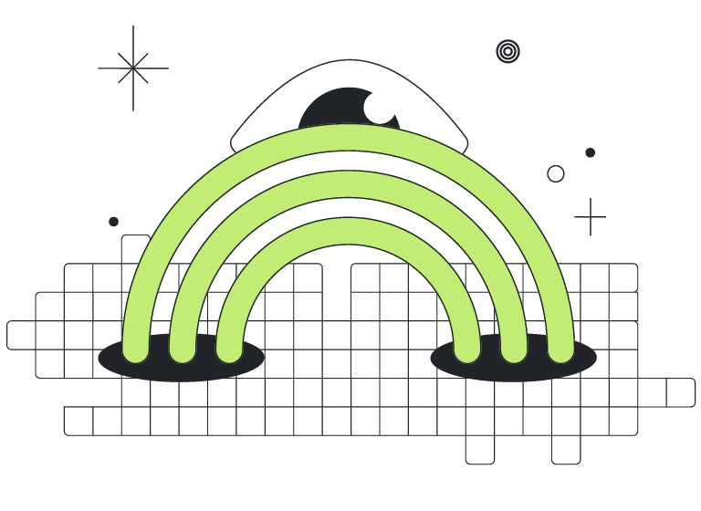</p> </div> <div class="columns-container columns-top"> <div class="col"> **Bridges** are special entry relays whose IP addresses are **not publicly listed**: - They act as alternative entry points to the Tor network - Users obtain bridge addresses through out-of-band channels (email, Telegram bots, etc.) - Much harder for censors to discover and block </div> <div class="col"> **Pluggable Transports** add an additional layer of obfuscation to bridge traffic: - **obfs4**: makes Tor traffic look like random encrypted noise - **meek-azure**: disguises traffic as connections to Microsoft services - **Snowflake**: channels traffic through volunteer-run WebRTC proxies (looks like a video call) - **WebTunnel**: mimics regular HTTPS web traffic </div> </div> </div> --- <!-- .slide: data-state="break-blue hide-controls" --> # How Tor Works: Connection Establishment --- ## Directory Authorities <div class="content-center"> Before building a circuit, Alice needs to know which relays are available. <br/> <div class="fragment" data-fragment-index="0"> The Tor network maintains a set of trusted **Directory Authorities** (currently 10): - They publish a **consensus document** every hour - The consensus lists all active relays with their: - IP addresses and ports - Public keys (for key exchange) - Flags (e.g., Guard, Exit, Stable, Fast) - Bandwidth capacity <br/> </div> <div class="fragment" data-fragment-index="1"> Alice downloads and caches this consensus to select relays for building circuits. <br/> </div> </div> --- ## Relay Selection <div class="content-center"> Alice selects relays from the consensus using specific rules: <br/> 1. **Guard relay**: chosen from relays with the *Guard* flag (stable, high-bandwidth). Alice reuses the same guard for weeks/months to reduce the chance of picking a malicious guard. 2. **Middle relay**: chosen randomly (weighted by bandwidth) from all available relays. 3. **Exit relay**: chosen from relays with the *Exit* flag and whose **exit policy** allows connections to the desired destination port. <br/> <div class="fragment" data-fragment-index="0"> <div class="alert alert-warning"><b>CONSTRAINT</b>: No two relays in the same circuit can be from the same family or the same /16 subnet (to avoid a single operator controlling multiple hops).</div> <br/> </div> </div> --- ## Building the Circuit: Step by Step <div class="content-center"> <div class="cell-center"> <p>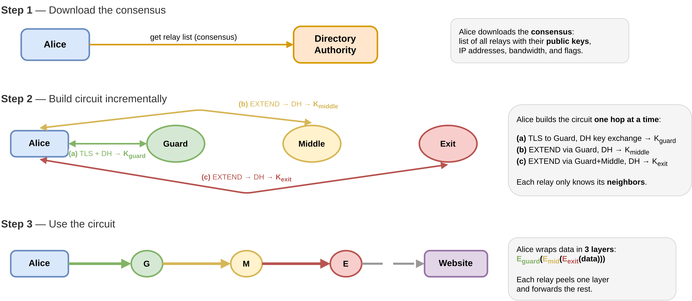</p> </div> </div> --- ## Step 1: Connect to the Guard Relay <div class="content-center"> Alice establishes a **TLS connection** to the guard relay and performs a **Diffie-Hellman (DH) key exchange**: <br/> 1. Alice sends a `CREATE` cell containing her half of the DH handshake ($g^x$) 2. The guard responds with its half ($g^y$) in a `CREATED` cell 3. Both derive a shared secret key: $K_{guard} = g^{xy}$ <br/> <div class="fragment" data-fragment-index="0"> At this point, Alice has an encrypted channel to the guard relay. The guard knows Alice's IP, but nothing else. <br/> </div> </div> --- ## Step 2: Extend to the Middle Relay <div class="content-center"> Alice now asks the guard to extend the circuit to the middle relay: <br/> 1. Alice sends an `EXTEND` cell (encrypted with $K_{guard}$) asking the guard to connect to the middle relay 2. The guard establishes a TLS connection to the middle relay 3. Alice performs a **DH key exchange with the middle relay** (tunneled through the guard) 4. Both derive: $K_{middle} = g^{x'y'}$ </div> --- <div class="content-center"> <div class="alert alert-note"><b>NOTE</b>: The guard relay <b>cannot read</b> the DH exchange with the middle relay: Alice's <code>EXTEND</code> cell contains a DH handshake payload encrypted with the <b>middle relay's public key</b> (obtained from the consensus).</div> <br/> <div class="fragment" data-fragment-index="0"> <div class="alert alert-note"><b>NOTE</b>: The guard can only see that it must forward this opaque payload to the middle relay — it cannot decrypt it. As a result, $K_{middle}$ is known only to Alice and the middle relay. The middle relay, in turn, does not know Alice's IP — it only sees the guard's IP.</div> </div> </div> --- <div class="content-center"> Alice repeats the process to extend the circuit to the exit relay: <br/> 1. Alice sends an `EXTEND` cell (encrypted with $K_{guard}$ then $K_{middle}$) 2. The middle relay forwards it to the exit relay 3. Alice performs a **DH key exchange with the exit relay** (tunneled through guard + middle) 4. Both derive: $K_{exit} = g^{x''y''}$ <br/> <div class="fragment" data-fragment-index="0"> Now Alice has **three shared keys** ($K_{guard}$, $K_{middle}$, $K_{exit}$) and the circuit is ready. <br/> </div> <div class="fragment" data-fragment-index="1"> Each relay only knows its **immediate predecessor and successor** — no relay knows the full path. </div> </div> --- ## Step 4: Sending Data Through the Circuit <div class="content-center"> When Alice wants to send a request to a website: <br/> 1. Alice encrypts the data three times (innermost to outermost): $$\text{cell} = E_{K_{guard}}(E_{K_{middle}}(E_{K_{exit}}(\text{data})))$$ 2. **Guard** decrypts with $K_{guard}$ → forwards to middle 3. **Middle** decrypts with $K_{middle}$ → forwards to exit 4. **Exit** decrypts with $K_{exit}$ → sends plaintext request to the website <br/> <div class="fragment" data-fragment-index="0"> The response travels back through the circuit in reverse: each relay adds one layer of encryption, and Alice strips all three layers to recover the data. <br/> </div> </div> --- ## Security Properties of a Tor Circuit <div class="content-center"> | Entity | Knows Source? | Knows Destination? | Sees Content? | |--------|:---:|:---:|:---:| | **ISP** | <span style="color:red !important">**YES**</span> — Alice's IP | <span style="color:green !important">**NO**</span> | <span style="color:green !important">**NO**</span> (encrypted) | | **Guard relay** | <span style="color:red !important">**YES**</span> — Alice's IP | <span style="color:green !important">**NO**</span> | <span style="color:green !important">**NO**</span> (encrypted) | | **Middle relay** | <span style="color:green !important">**NO**</span> | <span style="color:green !important">**NO**</span> | <span style="color:green !important">**NO**</span> (encrypted) | | **Exit relay** | <span style="color:green !important">**NO**</span> | <span style="color:red !important">**YES**</span> — Website | <span style="color:red !important">**YES**</span> if not HTTPS | | **Website** | <span style="color:green !important">**NO**</span> (sees exit IP) | <span style="color:red !important">**YES**</span> | <span style="color:red !important">**YES**</span> | <br/> <div class="fragment" data-fragment-index="0"> <div class="alert alert-warning"><b>IMPORTANT</b>: If the website does not use HTTPS, the exit relay can see the plaintext content. Always use HTTPS over Tor!</div> </div> </div> --- ## Tor Cells and Protocol <div class="content-center"> Tor communication is based on fixed-size units called **cells** (514 bytes): <br/> - **Control cells**: used for circuit management - `CREATE` / `CREATED`: establish a hop (DH key exchange) - `EXTEND` / `EXTENDED`: extend circuit by one hop - `DESTROY`: tear down a circuit <br/> - **Relay cells**: used for data transfer - `RELAY DATA`: carry application data - `RELAY BEGIN`: open a TCP stream to a destination - `RELAY END`: close a TCP stream <br/> <div class="fragment" data-fragment-index="0"> Fixed-size cells prevent traffic analysis based on packet sizes. </div> </div> --- ## Circuit Lifetime and Rotation <div class="content-center"> Circuits are **not permanent**: <div class="columns-container columns-center"> <div class="col"> <div class="cell-center"> <p>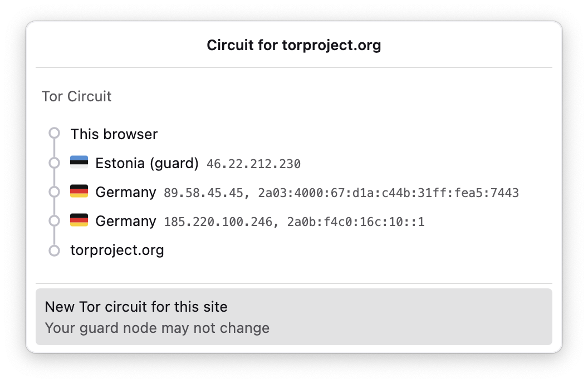</p> </div> </div> <div class="col"> - A new circuit is built every **10 minutes** for new connections - Existing streams continue using their current circuit until they finish - Different destinations may use **different circuits** simultaneously - The **guard relay** is kept stable for weeks/months for security reasons </div> </div> <br> <div class="columns-container columns-center"> <div class="col"> <div class="fragment" data-fragment-index="0"> **Why rotate circuits?** - Limits the window of vulnerability if a relay is compromised - Prevents long-term traffic correlation attacks </div> </div> <div class="col"> <div class="fragment" data-fragment-index="1"> **Why keep the same guard?** - If you randomly pick guards, you will *eventually* pick a malicious one - Keeping one guard limits the probability of exposure </div> </div> </div> </div> --- <!-- .slide: data-state="break-blue hide-controls" --> # Hidden Services (Onion Services) --- ## What are Hidden Services? <div class="content-center"> <div class="cell-center"> So far we have seen how Tor protects the **client** (Alice). But what about the **server**? </div> <br/> <div class="fragment" data-fragment-index="0"> **Hidden Services** (also called **Onion Services**) allow servers to offer services through Tor **without revealing their IP address**. </div> <div class="fragment" data-fragment-index="1"> Key properties: - The server's IP address and physical location remain **hidden** - Accessible only through the Tor network using a `.onion` address - Traffic between client and server is **end-to-end encrypted** within Tor - The traffic **never leaves the Tor network** (no exit relay needed) </div> </div> --- <div class="content-center"> Example `.onion` address (v3, 56 characters): <br/> <div class="cell-center"> `duckduckgogg42xjoc72x3sjasowoarfbgcmvfimaftt6twagswzczad.onion` </div> </div> --- ## Why Hidden Services? <div class="content-center"> Legitimate use cases: <br/> - **Whistleblowing platforms**: SecureDrop (used by The New York Times, The Guardian, etc.) - **Censorship-resistant publishing**: news organizations, blogs in repressive regimes - **Private communication**: messaging services that resist surveillance - **Self-hosted services**: personal servers accessible without exposing your home IP - **Enhanced security**: end-to-end encryption within Tor, no exit relay vulnerability <br/> <div class="fragment" data-fragment-index="0"> Many major websites offer `.onion` mirrors: Facebook, DuckDuckGo, BBC, ProtonMail, The New York Times, etc. <br/> </div> </div> --- ## Hidden Service: Key Components <div class="content-center"> Hidden services rely on three special components: <br/> 1. **Introduction Points**: relays where the hidden service "waits" for incoming connection requests. The hidden service builds Tor circuits to several introduction points. 2. **Rendezvous Point**: a relay chosen by the client where both parties meet to exchange data. Neither the client nor the service reveals their IP to the rendezvous point. 3. **HSDir (Hidden Service Directory)**: a distributed hash table (stored across specific relays) that holds **service descriptors** — documents listing a service's introduction points and public key. <div class="fragment" data-fragment-index="0"> The `.onion` address is derived from the service's **public key** (a hash), so it is self-authenticating. </div> </div> --- <!-- .slide: data-state="break-blue hide-controls" --> # Hidden Services: Detailed Protocol --- ## Phase 1: Service Setup <div class="content-center"> <div class="cell-center"> <p>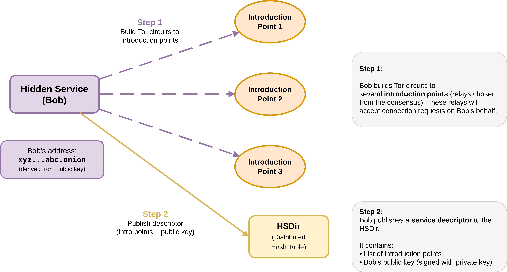</p> </div> </div> --- ## Phase 1: Service Setup (Details) <div class="content-center"> When Bob wants to make his server available as a hidden service: <br/> **Step 1** — Bob generates a **long-term key pair** (public/private). The `.onion` address is derived from the public key. **Step 2** — Bob selects several relays as **introduction points** and builds Tor circuits to each of them. **Step 3** — Bob tells each introduction point: "I am a hidden service, please accept connections on my behalf." **Step 4** — Bob creates a **service descriptor** containing: - His public key - The list of introduction points - The descriptor is **signed** with his private key **Step 5** — Bob publishes the descriptor to the **HSDir** (distributed hash table) through Tor circuits. <br/> <div class="fragment" data-fragment-index="0"> Bob is now reachable at `xyz...abc.onion` without revealing his IP address. </div> </div> --- ## Phase 2: Client Connection <div class="content-center"> <div class="cell-center"> <p>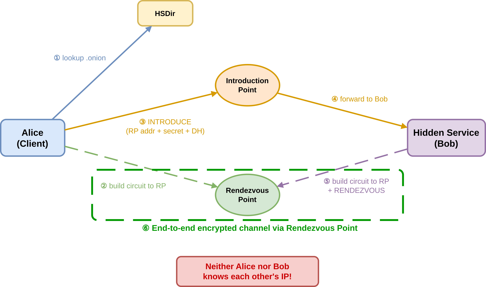</p> </div> </div> --- ## Phase 2: Client Connection (Details) <div class="content-center"> When Alice wants to connect to Bob's hidden service (`xyz...abc.onion`): <br/> **Step 1** — Alice queries the **HSDir** to obtain Bob's service descriptor (introduction points + public key). **Step 2** — Alice selects a random relay as the **Rendezvous Point (RP)** and builds a Tor circuit to it. She sends a one-time secret (cookie) to the RP. **Step 3** — Alice builds a Tor circuit to one of Bob's **introduction points** and sends an `INTRODUCE` cell containing: - The address of the Rendezvous Point - The one-time secret (cookie) - Her half of a DH key exchange - All encrypted with Bob's public key </div> --- ## Phase 2: Client Connection (Details, continued) <div class="content-center"> **Step 4** — The introduction point forwards the `INTRODUCE` cell to Bob through Bob's Tor circuit. <br/> <div class="fragment" data-fragment-index="0"> **Step 5** — Bob decrypts the cell with his private key, learns the RP address and Alice's DH half. Bob builds a new Tor circuit to the **Rendezvous Point** and sends a `RENDEZVOUS` cell containing: - The one-time secret (cookie) - His half of the DH key exchange <br/> </div> <div class="fragment" data-fragment-index="1"> **Step 6** — The RP connects Alice's circuit to Bob's circuit. Both derive a shared session key from the DH exchange. Communication is now **end-to-end encrypted**. <br/> </div> <div class="fragment" data-fragment-index="2"> <div class="cell-center"> **Neither Alice nor Bob ever learns the other's IP address!** </div> </div> </div> --- ## Hidden Services: Security Analysis <div class="content-center"> | Entity | Knows Alice? | Knows Bob? | Sees Content? | |--------|:---:|:---:|:---:| | **Introduction Point** | <span style="color:green !important">**NO**</span> | <span style="color:green !important">**NO**</span> (Tor circuit) | <span style="color:green !important">**NO**</span> (encrypted) | | **Rendezvous Point** | <span style="color:green !important">**NO**</span> (Tor circuit) | <span style="color:green !important">**NO**</span> (Tor circuit) | <span style="color:green !important">**NO**</span> (e2e encrypted) | | **HSDir** | <span style="color:green !important">**NO**</span> | <span style="color:green !important">**NO**</span> (descriptor only) | <span style="color:green !important">**NO**</span> | | **Alice's Guard** | <span style="color:red !important">**YES**</span> — Alice's IP | <span style="color:green !important">**NO**</span> | <span style="color:green !important">**NO**</span> | | **Bob's Guard** | <span style="color:green !important">**NO**</span> | <span style="color:red !important">**YES**</span> — Bob's IP | <span style="color:green !important">**NO**</span> | <br/> <div class="fragment" data-fragment-index="0"> The total path involves **6 Tor relays** (3 for Alice's circuit + 3 for Bob's circuit), plus the Rendezvous Point. This provides strong anonymity for both parties but at the cost of higher latency. <br/> </div> </div> --- ## Tor: Limitations and Threats <div class="content-center"> Tor provides strong anonymity but is **not perfect**: <br/> - **Traffic correlation attacks**: an adversary controlling both the guard and exit (or the ISP and destination) can correlate traffic timing and volume to deanonymize users - **Exit relay eavesdropping**: if the connection to the destination is not encrypted (no HTTPS), the exit relay can read the plaintext content - **Browser fingerprinting**: unique browser characteristics (screen size, fonts, plugins) can be used to track users across sessions - **Application-level leaks**: DNS leaks, WebRTC leaks, or logging into personal accounts can reveal identity - **Performance**: Tor is significantly slower than direct connections due to multiple hops and encryption layers </div> --- ## Summary <div class="content-center"> - **Tor** provides anonymous communication by routing traffic through 3 volunteer-run relays with layered encryption (onion routing) - **No single relay** knows both the source and destination of the communication - Circuits are built **incrementally** using DH key exchanges, one hop at a time - **Hidden Services** (.onion) allow servers to be reachable without revealing their IP, using introduction points and rendezvous points - Tor provides **privacy by design**: the system architecture ensures anonymity without requiring trust in any single party - Tor is **not bulletproof**: traffic correlation attacks, exit eavesdropping, and application-level leaks remain threats </div>